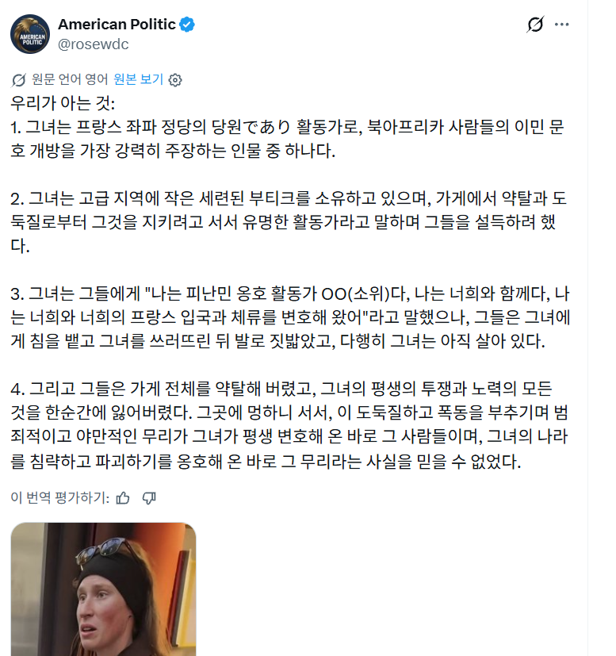
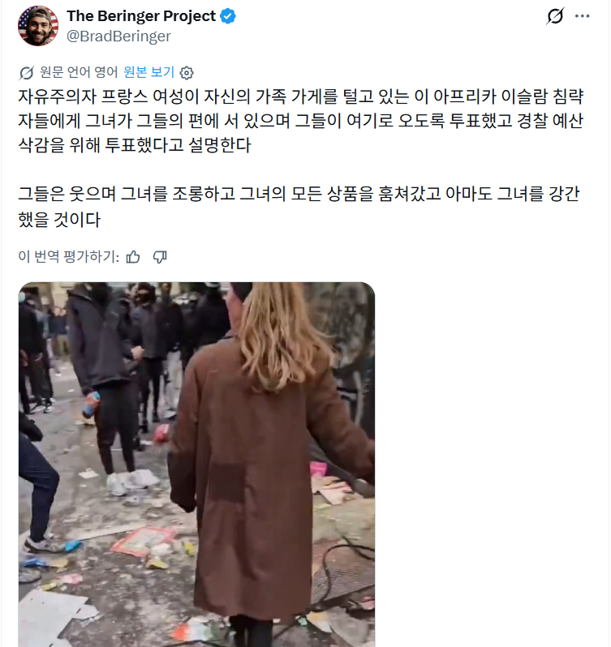
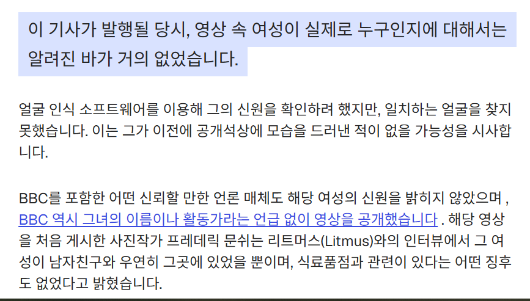
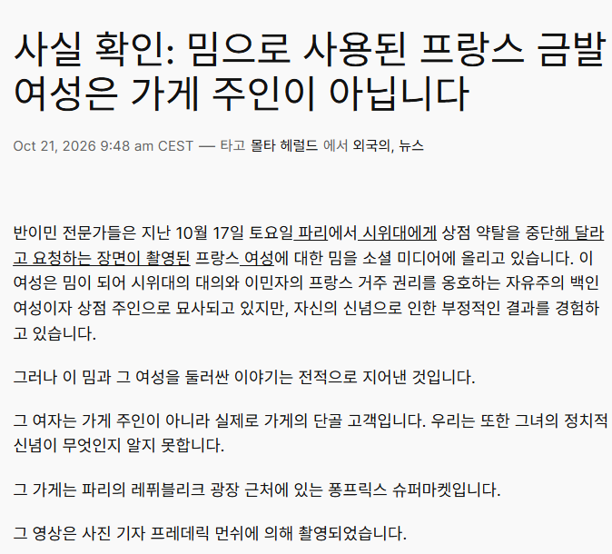

최근 일어난 프랑스 시위에서, 약탈자들에게 소리치던 백인 여성이 있다.
영상을 찾아 보면 대략 약탈자들에게 약탈을 하지 말라며 소리치는데,
이 사람은 기묘할 정도로 유럽 극우들에게 '난민을 받자고 찬성했다가 현실을 깨달은 좌파 여성'으로 소비되고 있다.

이 여성이 프랑스 좌파 정당 소속이며 북아프리카 이민 수용을 지지한 유명 활동가라는 주장
프랑스 좌파 정부와 시위를 지지했던 이 여성이 자기 가게를 약탈당했다는 주장

좌파 정당에 투표한 프랑스 여성이 난민에게 가게를 털렸다는 주장을 현 트위터에서는 물 반 고기 반 수준으로 접할 수 있다.
그럼 저 수많은 트위터 우파 계정들이 쏟아내고 디시펨코에서 그대로 퍼오는 이 주장들은 사실일까?
헝가리 최대의 독립 팩트체크 매체 lakmusz에 따르면 전혀 그렇지 않다.

추가로 몰타 섬의 탐사 보도 업체인 themalteseherald에 따르면, 이 여성은 가게 단골이지 주인이 아니라고 한다.

즉, X에서 쏟아지는 이 여성에 대한 정보는 싸그리 유럽 극우들이 지어낸 가짜뉴스가 확대 재생산된 것으로 볼 수 있다.
그들의 비틀린 정의감을 채워 주기 위해 애먼 젊은 여성을 현실을 모르고 난민을 찬성한 좌파 여성으로 둔갑시킨 것이다.
그런데 일련의 이 사태에서 벌어진 뭔가 트위터의 극우 계정들과 디시펨코의 반응을 보면,
'젊은 여자에게 세상의 냉혹한 진실을 계몽시켜 주는 냉철하고 이성적인 나'에 도취되어 있는 것으로 보이는데......
도대체 왜 그들은 '언론이 말하지 않고 있는, 나만 아는 진짜 진실'을 애먼 타인에게 굳이 알려주려 하는 걸까?
왜 그걸 가짜뉴스 확대 재생산이 아니라 계몽이라고 생각하는 걸까?
알 수 없는 노릇이다.
선동은 그저 말한마디 사진한장이면되는데 해명하는것에는 수십시간이 필요하다